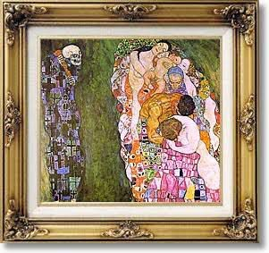

Dans la série "Les vents contraires"
N°14. La vie et la mort
La vie, c’est pas une ligne droite.
C’est un bazar sacré.
Tu cours, tu tombes, tu ris pour rien,
tu t’accroches à des gens,
tu les perds,
tu recommences.
Elle ne prévient pas.
Elle t’offre des miracles dans une salle d’attente,
et te fout des gifles un jeudi pluvieux.
Mais elle pulse.
Elle crie.
Elle chante même quand t’écoutes pas.
Et la mort ?
La mort ne crie pas.
Elle attend,
comme une vieille amie qu’on n’a jamais rencontrée,
mais qui sait déjà tout de toi.
Elle n’est pas cruelle,
elle est juste.
Elle rappelle que rien ne dure,
et que c’est pour ça que tout est précieux.
Sans elle,
on ne savourerait rien.
Pas un baiser, pas une larme,
pas ce foutu café du matin.
Alors on vit.
Pas pour éviter la mort —
mais pour lui donner tort,
le plus longtemps possible,
avec du feu dans les veines.
Djamel Metref
At Yenni le 18 août 2025

← Tous les poèmes